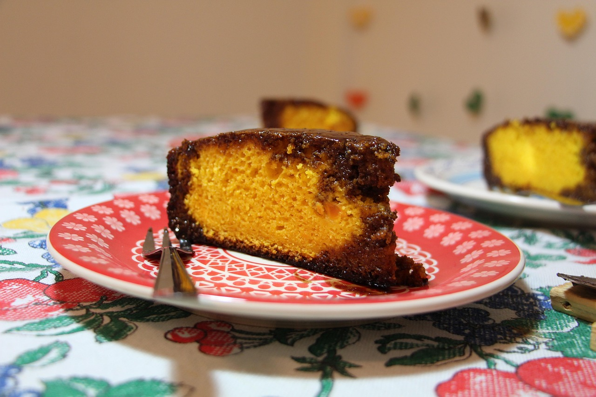

Carrot Cake

Image by Larissa Kozemekin from Pixabay
A delicious brazilian recipe for all the family
This recipe is a must in all brazilian's kitckens. It can be eaten at breakfast or as an afternoon snack.
And when paired with brigadeiro frosting is a delicious dessert. The best part? Is super easy to prepare and is
naturally lactose free, for those with intolerance. So, let's get started!
Ingredients
Dough
- 270g of carrots
- 240ml of vegetal oil
- 3 eggs
- 480g of sugar
- 480g of wheat flour
- 1 tablespoon of baking powder
Frosting(optional)
- 100g of dark chocolate
- 160g of sugar
- 2 tablespoons of water
Directions
Dough
- Cut the carrots in small pieces.
- In a blender add the eggs, the sugar, the oil and the carrots. Blend until
the mixture gets really smooth.
- Add the flour and blend it.
- Add the baking powder and blend it.
- Grease and flour a cake pan and pour cake batter into it.
- Preheat the oven to 180 degrees C. Bake cake for about 40 minutes, or
until a toothpick inserted into the center comes out clean.
Frosting
- Cut the chocolate in small pieces and put it in a glass bowl
- Add some water in a pan and put the glass bowl inside of it.
It must not touch the bottom of the pan.
- Let the chocolate melt with the steam. Mix if necessary.
- When the chocolate is completed melted add the sugar and mix to get
smooth consistency.
- Add the water little by little always mixing.
- Cover the cake with the frosting and let it cool down before serving.
Note: if you want to susbtitute the frosting for brigadeiro just follow our brigadeiro recipe
and add one can of milk cream to it before covering the cake.